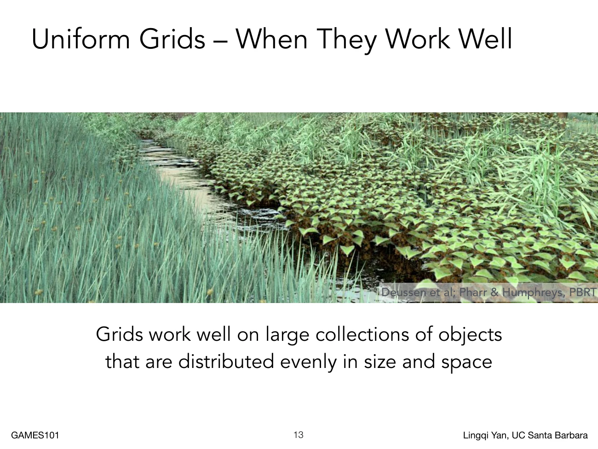
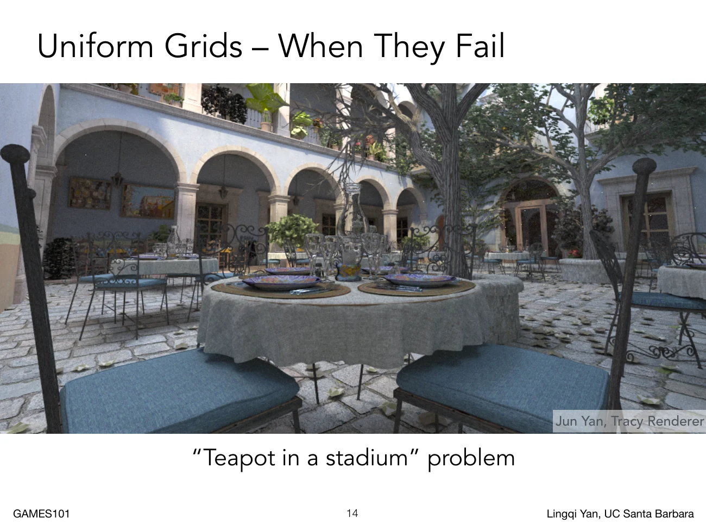
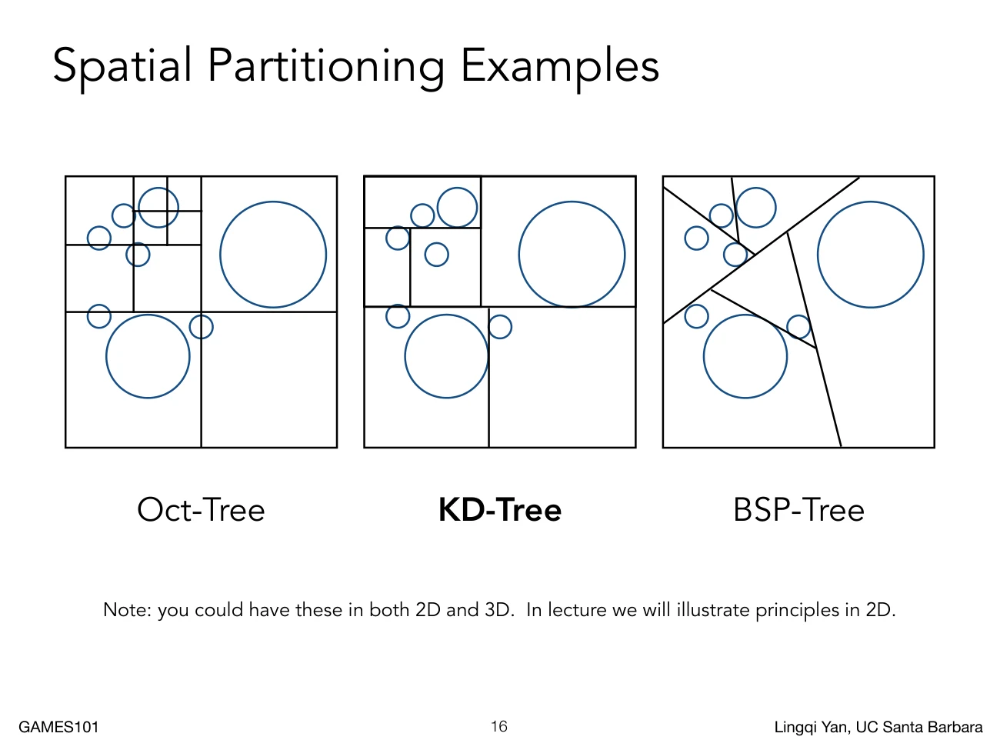
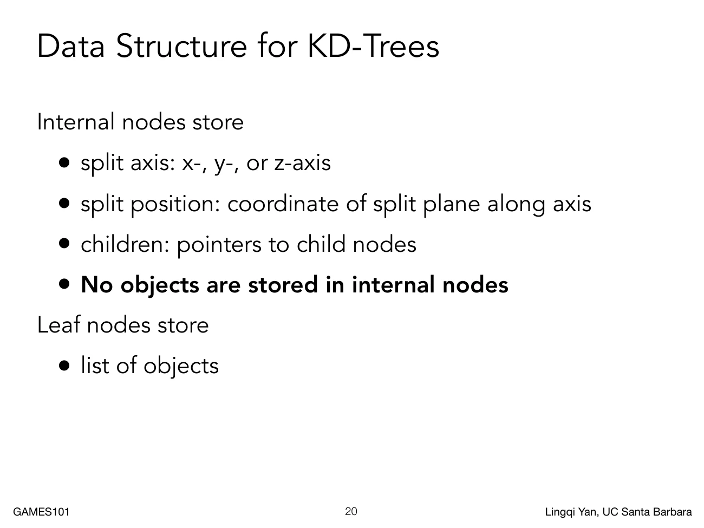
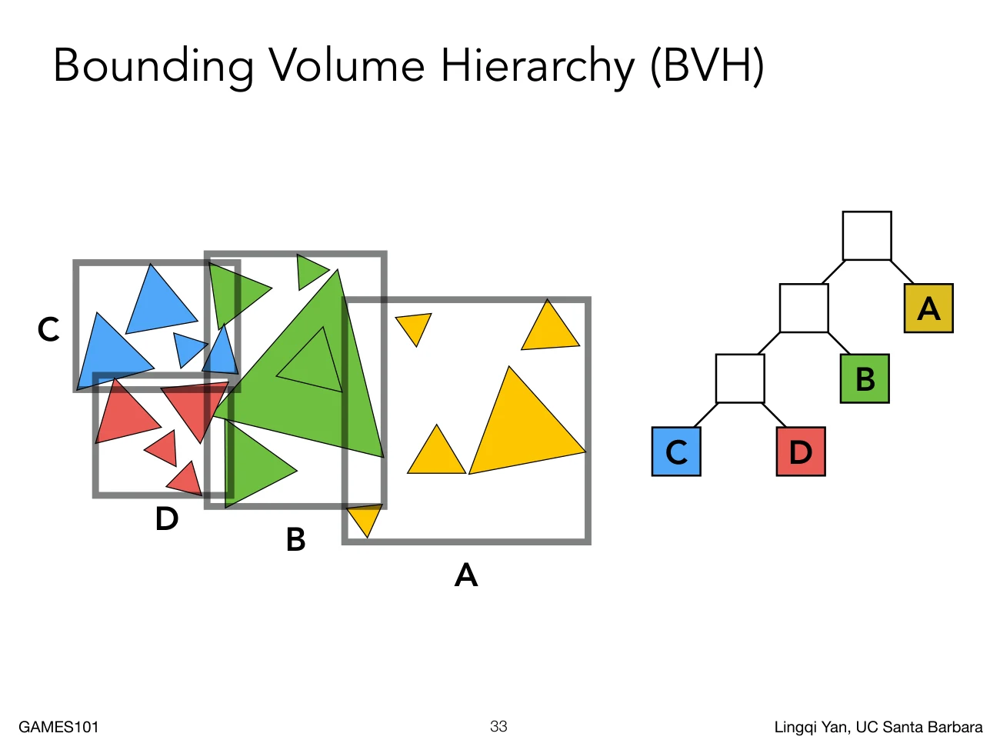
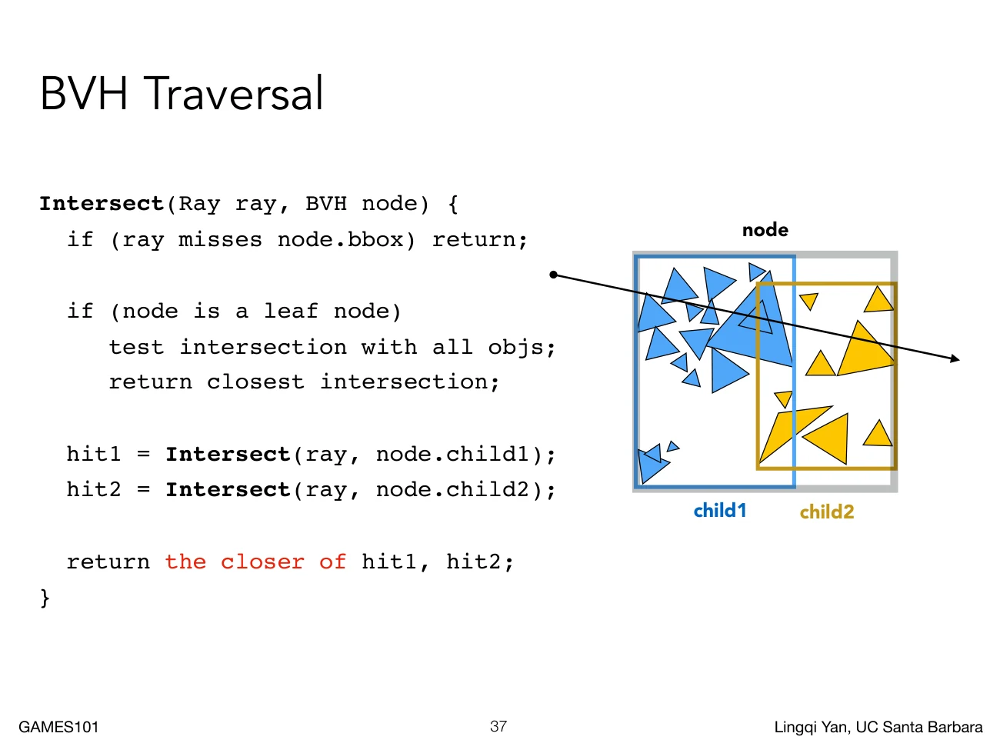
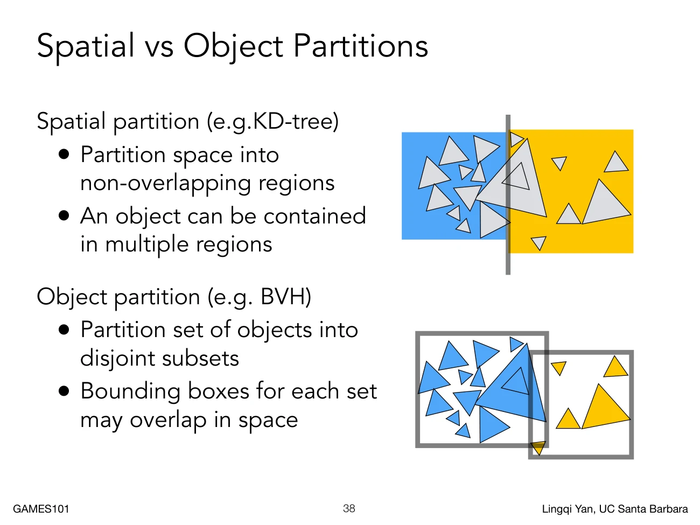
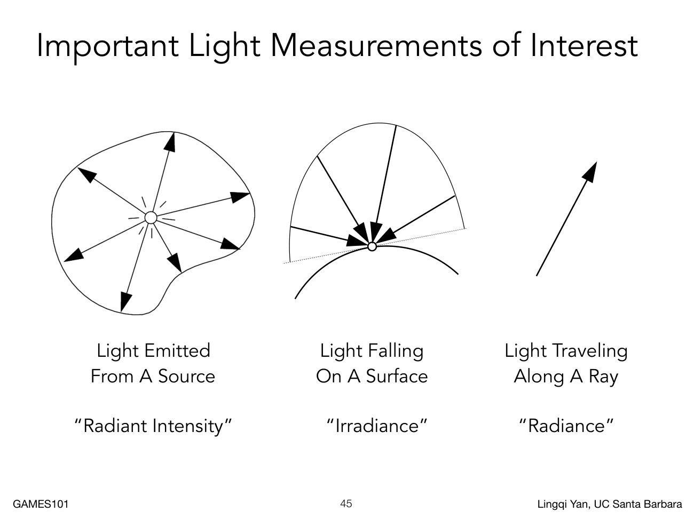
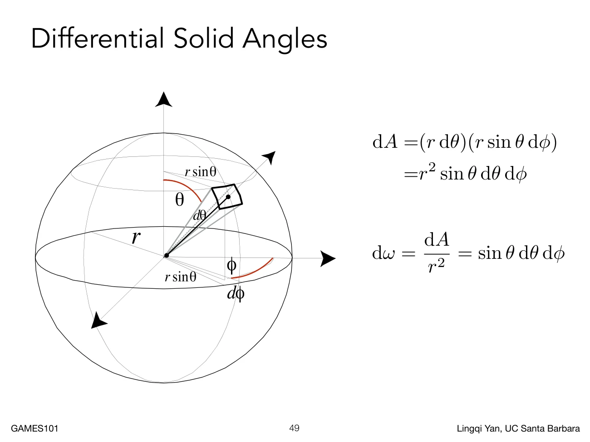
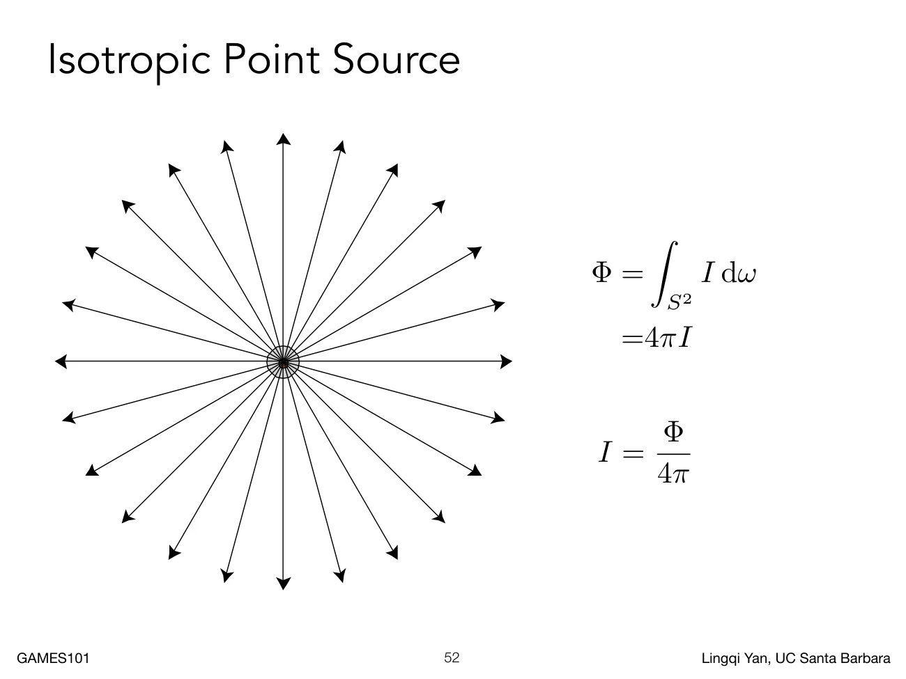

第 14 讲：光线追踪加速与辐射度量学基础
用包围盒加速光线求交，并引入物理正确的光照度量单位
◆ 学完这一讲，你应该能
理解均匀网格（Uniform Grids）的预处理与遍历流程，并能分析其适用与失效场景
掌握空间划分（KD-Tree）与物体划分（BVH）的核心区别，能手工构建小规模 BVH
能写出 BVH 遍历的递归伪代码，并解释其正确性
理解辐射度量学中能量、通量、强度、辐照度、辐亮度的定义与单位
能计算简单点光源的辐射强度，并解释立体角与微分立体角的关系
核心结论速记
均匀网格加速光线求交：预处理建格、运行时按光线顺序遍历格子，适合均匀分布的大规模物体。
网格分辨率需权衡：太少没加速，太多遍历开销大；经验公式为 #cells = C * #objs，C ≈ 27（3D）。
空间划分（KD-Tree）将空间切成不重叠区域，一个物体可属于多个区域；物体划分（BVH）将物体集合分成不相交子集，包围盒可重叠。
BVH 构建：递归将物体集二分，每次重新计算包围盒，直到节点物体数足够少；划分策略常用最长轴 + 中位数分割。
BVH 遍历：若光线与节点包围盒不相交则返回；叶子节点测试所有物体；内部节点递归左右子树取最近交点。
辐射度量学提供物理正确的光照度量：辐射能量 Q [J]、辐射通量 Φ [W]、辐射强度 I [W/sr]、辐照度 E [W/m²]、辐亮度 L [W/(sr·m²)]。
立体角 Ω 是球面面积与半径平方之比，单位球面总立体角为 4π sr；微分立体角 dω = sinθ dθ dφ。
各向同性点光源的辐射强度 I = Φ / (4π)，即通量均匀分布在 4π 立体角上。
011. 为什么需要加速结构：从暴力求交到包围盒
上一讲我们实现了 Whitted 风格的光线追踪，但有一个致命问题：每条光线都要和场景中所有物体求交。假设场景有 100 万个三角形，每条光线做 100 万次求交，而每个像素可能发射多条光线，计算量会爆炸。
加速的核心思想是用包围盒（Bounding Box）快速排除不可能相交的区域。轴对齐包围盒（AABB）与光线求交非常快，只需分别计算光线与三对平行平面的交点区间，再取交集。如果光线连包围盒都不碰，盒内的物体就完全不用测试。
但只给整个场景加一个包围盒还不够——光线仍然要进入盒内逐个测试物体。我们需要层次化的加速结构：把空间或物体组织成树，让光线沿着树快速跳过无关区域。本讲介绍两类经典方案：均匀网格（Uniform Grids） 和 空间划分（Spatial Partitions），以及更现代的 物体划分（BVH）。
直觉：就像查字典先翻到首字母所在的大章节，再逐级缩小范围，而不是从第一页开始逐字找。
常见坑
包围盒求交写错 → 光线明明穿过盒子却被判定不相交 → 检查 t_min/t_max 的交换与负方向处理。
UE / Unity 落地
UE 的 Nanite 和 Lumen 内部使用层次化加速结构（BVH）做光线求交与剔除；Unity 的 Ray Tracing API 也依赖 BVH。
在 UE 中可通过
r.RayTracing相关 CVar 观察加速结构对性能的影响。
022. 均匀网格：预处理与光线遍历
均匀网格（Uniform Grids）把场景的包围盒切成规则的三维格子，每个物体登记到它覆盖的所有格子中。
预处理步骤：
- 找到场景的包围盒（Bounding Box）。
- 根据分辨率创建网格。
- 对每个物体，将它存入所有与之重叠的格子。
光线与场景求交：
- 按光线传播顺序逐步穿过网格（类似 2D 的 DDA 算法）。
- 对每个经过的格子，测试其中存储的所有物体。
- 一旦找到交点且该交点位于当前格子之前，即可提前结束。
网格分辨率是关键参数：
- 格子太少（比如只有 1 个）→ 没有加速效果。
- 格子太多 → 光线要遍历大量空格子，额外开销大。
- 经验公式：
#cells = C * #objs，在 3D 中 C ≈ 27。
均匀网格在物体大小均匀、空间分布均匀时表现很好（例如大量粒子、植被）。但遇到「体育场里的茶壶」问题——一个巨大物体和许多小物体共存时，巨大物体覆盖大量格子，导致每个格子都要测试它，效率骤降。


常见坑
网格分辨率设得过高 → 光线遍历大量空格子，反而比暴力求交慢 → 用经验公式估算并实测调整。
物体跨多个格子时重复存储 → 内存占用高且同一物体被多次测试 → 可改用物体划分结构（BVH）。
UE / Unity 落地
UE 的粒子系统（Niagara）和植被剔除常用均匀网格做空间划分；Unity 的 Physics Broadphase 也使用类似网格结构。
033. 空间划分：KD-Tree 的构建与遍历
空间划分（Spatial Partitions）不把空间切成固定格子，而是递归地把空间切成不重叠的区域，形成树结构。常见例子有八叉树（Oct-Tree）、BSP 树和 KD 树。本讲以 KD 树为例（2D 示意，3D 同理）。
KD-Tree 预处理：
- 每次选一个轴（x、y 或 z）和一个分割位置，把当前区域切成两半。
- 递归进行，直到区域足够小或物体足够少。
- 注意：一个物体可能跨越分割平面，因此会同时属于多个区域。
KD-Tree 节点存储：
- 内部节点：分割轴、分割位置、子节点指针；不存储物体。
- 叶子节点：存储物体列表。
遍历 KD-Tree：
- 光线与当前节点区域求交，得到进入和离开的 t_min、t_max。
- 如果是内部节点，判断光线先进入哪个子区域，先递归近的子节点，再递归远的子节点（若光线与远子区域相交）。
- 如果是叶子节点，测试其中所有物体，记录最近交点。
- 若当前最近交点 t_hit 小于 t_max，可提前终止。
KD-Tree 的优点是空间划分严格不重叠，光线遍历顺序明确；缺点是同一物体可能被多个区域引用，且构建时分割平面的选择需要启发式（如沿最长轴、中位数分割）。


常见坑
物体跨分割平面时未重复存储 → 光线在某个区域漏掉该物体 → 构建时确保物体存入所有覆盖的叶子。
遍历时未按光线方向决定近远子节点 → 找到的交点不是最近 → 先递归近的子节点，并利用 t_hit 提前终止。
UE / Unity 落地
KD-Tree 在实时光线追踪中较少直接使用，但 BSP 树在早期游戏（如 Doom）中用于可见性判断；UE 的 BSP brush 仍保留类似概念。
044. 物体划分：BVH 的构建与遍历
BVH（Bounding Volume Hierarchy）是物体划分：把物体集合递归地分成不相交的子集，每个子集用一个包围盒包住。与 KD-Tree 不同，BVH 的包围盒可以重叠，但每个物体只属于一个叶子节点。
BVH 构建步骤：
- 计算当前物体集合的包围盒。
- 递归地将物体集合分成两个子集。
- 重新计算两个子集的包围盒。
- 当节点包含的物体足够少时停止，存入叶子节点。
如何划分子集：
- 选择要分割的维度：通常选当前包围盒最长的轴。
- 选择分割位置：常用中位数（median）或空间中点，使两边物体数量均衡。
BVH 节点存储：
- 内部节点：包围盒、子节点指针。
- 叶子节点：包围盒、物体列表。
BVH 遍历伪代码（来自课件）：
Intersect(Ray ray, BVH node) {
if (ray misses node.bbox) return;
if (node is a leaf node) {
test intersection with all objs;
return closest intersection;
}
hit1 = Intersect(ray, node.child1);
hit2 = Intersect(ray, node.child2);
return the closer of hit1, hit2;
}
BVH 的优点是构建快、物体只存一份、包围盒重叠不影响正确性；现代实时光线追踪（如 UE 的 Lumen、Nanite）普遍采用 BVH 及其变种。


常见坑
划分时未重新计算子集包围盒 → 包围盒过大或过小，导致漏交或效率低 → 每次划分后重新计算。
递归遍历时未比较两个子节点的交点距离 → 返回了较远的交点 → 最后取 closer of hit1, hit2。
UE / Unity 落地
UE 的 Nanite 使用层次化细节（HLOD）和 BVH 做光线求交；Lumen 的屏幕空间追踪和硬件光追都依赖 BVH。
Unity 的 Ray Tracing API 中，
RayTracingAccelerationStructure就是 BVH 的 GPU 实现。
BVH 遍历伪代码（课件原文）（cpp）
Intersect(Ray ray, BVH node) {
if (ray misses node.bbox) return;
if (node is a leaf node) {
test intersection with all objs;
return closest intersection;
}
hit1 = Intersect(ray, node.child1);
hit2 = Intersect(ray, node.child2);
return the closer of hit1, hit2;
}055. 空间划分 vs 物体划分：一张表看清区别
KD-Tree（空间划分）和 BVH（物体划分）是两种思路，容易混淆。课件用一张对比图总结：
| 特性 | 空间划分（KD-Tree） | 物体划分（BVH） |
|---|---|---|
| 划分对象 | 空间区域 | 物体集合 |
| 区域是否重叠 | 不重叠 | 包围盒可重叠 |
| 物体归属 | 一个物体可属于多个区域 | 一个物体只属于一个叶子 |
| 构建难度 | 较复杂（需选分割平面） | 较简单（按物体分） |
| 遍历提前终止 | 容易（按 t 排序） | 需比较两个子节点结果 |
关键区别：空间划分保证区域不重叠，因此光线遍历顺序唯一，可以严格按 t 从小到大访问；物体划分的包围盒可能重叠，光线可能同时进入两个子节点，需要递归两边并取最近交点。
实际工程中，BVH 因为构建快、内存局部性好，成为实时光线追踪的主流选择；KD-Tree 在离线渲染中仍有应用。

常见坑
误以为 BVH 的包围盒不能重叠 → 担心正确性 → 重叠不影响正确性，只影响效率。
在 BVH 遍历中试图按 t 排序只访问一个子节点 → 可能漏掉更近的交点 → 必须递归两个子节点（除非用 t_hit 提前终止）。
UE / Unity 落地
UE 的 Lumen 使用 BVH 做全局光照追踪；Unity 的 HDRP 光追也基于 BVH。
066. 辐射度量学：为什么需要物理正确的光照单位
在 Assignment 中我们实现 Blinn-Phong 模型，光强 I 通常随便取一个数（比如 10）。但 Whitted 风格光线追踪给出的结果物理上不正确——它没有能量守恒，也没有真实的度量单位。辐射度量学（Radiometry）提供了一套测量光照的物理量和单位，是路径追踪（Path Tracing）的基础。
本讲介绍四个核心量：
- 辐射能量（Radiant Energy）：电磁辐射的能量，单位焦耳（J），符号 Q。
- 辐射通量（Radiant Flux / Power）：单位时间发射、反射、传输或接收的能量，Φ = dQ/dt，单位瓦特（W）或流明（lm）。可以理解为「单位时间内通过传感器的光子数量」。
- 辐射强度（Radiant Intensity）：点光源在单位立体角内发射的功率，I = dΦ/dω，单位 W/sr（瓦特每球面度），也可用坎德拉（cd）。
- 辐照度（Irradiance）：单位面积接收的辐射通量，E = dΦ/dA，单位 W/m²。
- 辐亮度（Radiance）：单位立体角、单位投影面积上的辐射通量，L = d²Φ/(dω dA cosθ)，单位 W/(sr·m²)。
课件强调：辐射强度描述光源发射，辐照度描述表面接收，辐亮度描述光线传播。三者分别对应「光源→表面→光线」的不同阶段。

常见坑
混淆辐射强度与辐照度 → 单位用错 → 强度是 W/sr，辐照度是 W/m²。
认为 Blinn-Phong 的光强有物理单位 → 实际是任意缩放 → 物理正确渲染需用辐射度量单位。
UE / Unity 落地
UE 的物理光照单位：Directional Light 用 lux（勒克斯），Point Light 用 lumen（流明），Spot Light 用 candela（坎德拉）。这些正是辐射度量学的派生单位。
Unity 的 Light 组件中 Intensity 单位可选 Lumen、Candela、Lux，与课件中的单位对应。
077. 角度与立体角：从 2D 弧长到 3D 球面面积
角度（Angle）是圆弧长度与半径之比：θ = l / r，单位弧度（rad）。整个圆有 2π 弧度。
立体角（Solid Angle）是球面面积与半径平方之比：Ω = A / r²，单位球面度（sr）。整个球面有 4π 球面度。
微分立体角：在球坐标下，球面上一个小面积元 dA = (r dθ)(r sinθ dφ) = r² sinθ dθ dφ，因此 \[ d\omega = \frac{dA}{r^2} = \sin\theta \, d\theta \, d\phi \]
对整个球面积分： \[ \int_{S^2} d\omega = \int_0^{2\pi} \int_0^{\pi} \sin\theta \, d\theta \, d\phi = 4\pi \]
方向向量 ω 通常用单位向量表示。
各向同性点光源：如果点光源向所有方向均匀发射，总通量 Φ 均匀分布在 4π 立体角上，则辐射强度 I = Φ / (4π)。例如一个 11W LED 灯泡标称 800 流明，若各向同性，则强度约为 800 / (4π) ≈ 63.7 坎德拉。


常见坑
忘记微分立体角中的 sinθ 因子 → 积分结果错误 → 记住 dω = sinθ dθ dφ。
把立体角单位 sr 当成角度单位 rad → 概念混淆 → sr 是球面度，rad 是弧度。
UE / Unity 落地
在 UE 中调整 Point Light 的 Intensity 时，单位选 Candela 就是辐射强度；选 Lumen 则是总通量，引擎内部会除以 4π 转换为强度。
引擎对照表
| 概念 / 效果 | Unreal Engine | Unity |
|---|---|---|
光线求交加速结构 | Nanite/Lumen 使用 BVH；硬件光追使用 TLAS/BLAS | RayTracingAccelerationStructure（BVH） |
点光源强度单位 | Point Light Intensity 单位可选 Candela 或 Lumen | Light Intensity 单位可选 Candela/Lumen/Lux |
方向光辐照度单位 | Directional Light 用 Lux | Directional Light 用 Lux |
空间划分结构 | BSP 用于关卡几何（Brush） | Occlusion Culling 使用类似 Umbra 的划分 |
术语双语表
| English | 中文 | 说明 |
|---|---|---|
| Uniform Grids | 均匀网格 | 将空间切成规则格子，物体存入重叠格子，适合均匀分布场景。 |
| Spatial Partition | 空间划分 | 递归将空间切成不重叠区域，如 KD-Tree、Oct-Tree。 |
| BVH | 层次包围盒 | 将物体集合递归二分，每个节点有包围盒，物体只存叶子。 |
| Radiant Flux | 辐射通量 | 单位时间发射/接收的能量，Φ = dQ/dt，单位 W 或 lm。 |
| Radiant Intensity | 辐射强度 | 点光源单位立体角发射的功率，I = dΦ/dω，单位 W/sr 或 cd。 |
| Irradiance | 辐照度 | 单位面积接收的辐射通量，E = dΦ/dA，单位 W/m²。 |
| Radiance | 辐亮度 | 单位立体角、单位投影面积的辐射通量，L = d²Φ/(dω dA cosθ)。 |
| Solid Angle | 立体角 | 球面面积与半径平方之比，Ω = A/r²，单位 sr，整球 4π sr。 |
| Isotropic | 各向同性 | 向所有方向均匀发射，强度 I = Φ/(4π)。 |
课后练习
01 简述均匀网格（Uniform Grids）的预处理步骤和光线遍历流程，并说明它在什么情况下会失效。
查看答案
提示：
预处理：包围盒→建格→物体存入重叠格子；遍历：按光线顺序穿过格子，测试格子内物体。
预处理：1) 求场景包围盒；2) 按分辨率创建网格；3) 将每个物体存入所有与之重叠的格子。遍历：光线按传播顺序逐步穿过网格，对每个经过的格子测试其中所有物体，找到交点后若交点位于当前格子之前可提前结束。失效场景：物体大小差异大（如体育场里的茶壶），巨大物体覆盖大量格子，导致每个格子都要测试它，效率骤降。
02 给定一个包含 4 个物体的场景，请手工构建一棵 BVH（用最长轴+中位数分割），并画出树结构。
查看答案
提示：
先求整体包围盒，选最长轴，按物体中心坐标排序取中位数分成两组，递归直到每个叶子一个物体。
假设 4 个物体中心坐标分别为 (0,0,0)、(1,0,0)、(2,0,0)、(3,0,0)，整体包围盒 x 轴最长。按 x 坐标排序，中位数分成两组：{0,1} 和 {2,3}。分别计算两组包围盒。再对每组递归：{0,1} 按 x 中位数分成 {0} 和 {1}；{2,3} 分成 {2} 和 {3}。最终树：根节点（包围盒覆盖 0~3）→ 左子节点（覆盖 0~1）→ 叶子 {0}、{1}；右子节点（覆盖 2~3）→ 叶子 {2}、{3}。
03 写出 BVH 遍历的递归伪代码，并解释为什么最后要返回两个子节点中较近的交点。
查看答案
提示：
参考课件伪代码；因为包围盒可能重叠，光线可能同时进入两个子节点。
伪代码： Intersect(Ray ray, BVH node) { if (ray misses node.bbox) return; if (node is leaf) { test all objs; return closest; } hit1 = Intersect(ray, node.child1); hit2 = Intersect(ray, node.child2); return closer of hit1, hit2; } 原因：BVH 的包围盒可以重叠，光线可能同时穿过两个子节点的包围盒，因此必须递归两边，取距离最近的交点才是正确的可见点。
04 一个各向同性点光源的总辐射通量为 1000 lm，求其辐射强度（单位 cd）。若该光源照射到距离 2m 处的一个垂直于光线的表面，求该表面的辐照度（假设点光源近似）。
查看答案
提示：
I = Φ/(4π)；E = I / r²（因为 E = Φ/A，A = 4πr² 时 Φ 均匀分布，但这里用 I/r² 更直接）。
辐射强度 I = Φ/(4π) = 1000/(4π) ≈ 79.6 cd。距离 r=2m 处，辐照度 E = I / r² = 79.6 / 4 ≈ 19.9 lx（或 W/m² 量纲对应）。注意：若用总通量算，E = Φ/(4πr²) = 1000/(4π*4) ≈ 19.9，一致。
05 在 UE 中创建一个 Point Light，将 Intensity 单位设为 Candela，数值设为 100。这对应辐射度量学中的哪个量？如果改为 Lumen 单位，数值应设为多少才能得到相同的物理亮度？
查看答案
提示：
Candela 对应辐射强度 I；Lumen 对应总通量 Φ = 4πI。
Candela 对应辐射强度 I。若 I=100 cd，则总通量 Φ = 4πI = 4π*100 ≈ 1256.6 lm。因此在 Lumen 单位下应设为约 1257 lm 才能得到相同的物理亮度。